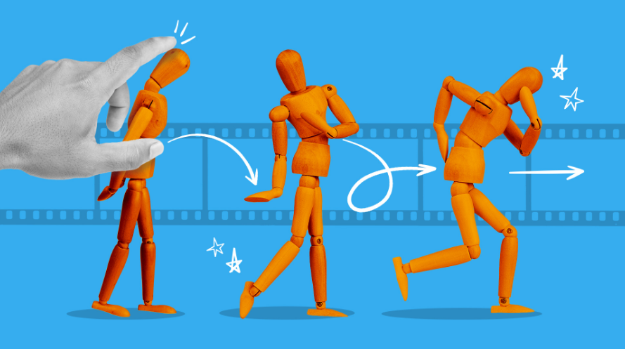

Welcome To stop motion films, a platform to create anything you want with anything you have
and is also perfect for begginers and the experienced, This website is mainly for ypung creators,
teachers and schools, hobby animators, content creators and animation begginers.

On this website, you’ll discover everything you need to get started and grow your skills,
from step-by-step tutorials and equipment guides to inspiring showcases from creators around the world. Learn how to build sets, design characters,
and bring motion to life using simple tools or advanced software. Dive in, experiment, and start creating animations that are entirely your own—because in stop motion,
every small movement makes a big difference.